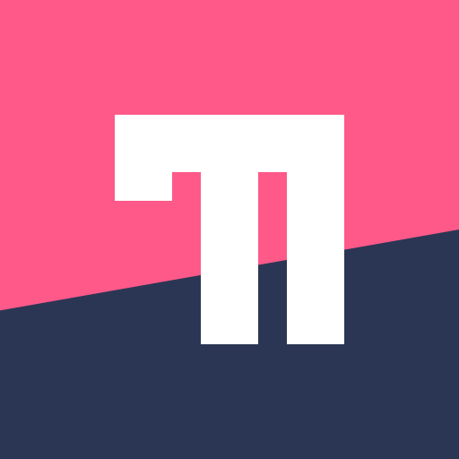
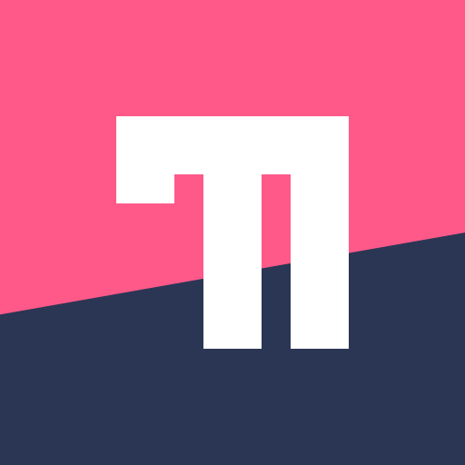

fmease /ʔɛf.ˈmiːz/ or /ʔɛf.ˈmis/
software engineer, computer science / informatics student, highly interested in type theory, programming language design and natural languages; loves to draw, Karateka, German citizen
active contributor to and reviewer for rustc, the compiler of the Rust programming language, and to rustdoc, its documentation generator; member of the compiler team and the rustdoc team
slowly but surely working on a dependently-typed programming language called Lushui